User Manual
From first launch to everyday use, module by module
This manual walks through the app one area at a time: what each part is, where to find it, how to use it and what to watch out for. Every screenshot is the real app running a demo project with made-up data. It reflects version 0.4.120; small details of the interface may change later.
Quick start
System requirements
- macOS 12 or later, on both Apple silicon and Intel. On macOS 11, use version 0.4.113, which is still available on the download page.
- Windows 10 or later (64-bit). The installer isn't code-signed yet, so the first time you run it Windows may show a SmartScreen warning. Click "More info → Run anyway" to continue.
Install
Download the installer for your system from the download page. On macOS, open the dmg and drag Eas-Term into your Applications folder.
First launch
Eas-Term doesn't write code by itself. The work is done by AI command-line tools such as Claude Code and Codex (called CLIs in this manual), signed in with your own accounts. The first time you open the app, you'll see a setup screen:
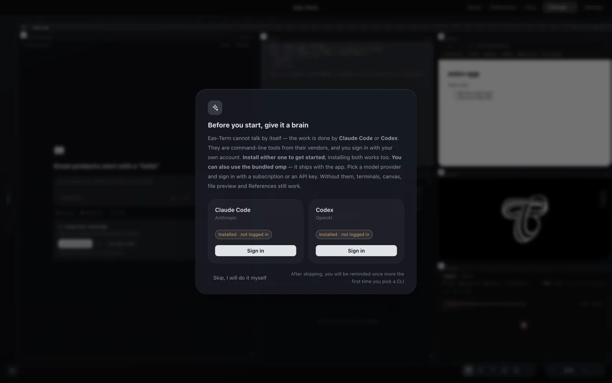
- CLIs that are already installed and signed in show "Logged in" right away.
- For a CLI that isn't installed, click its button and a terminal opens to install it. Once it's installed, sign in once with your own account.
- If you'd rather not use Claude Code or Codex, you can use omp, which ships with the app. It can sign in with subscriptions from several providers, or use an API key (stored in the Key Vault, see Key Vault).
- Click "Skip, I will do it myself" to go straight into the app. You can sign in any time later under "Settings › AI Chat".
Interface overview
The main window has a top bar and a workspace below it. Here's the canvas view:
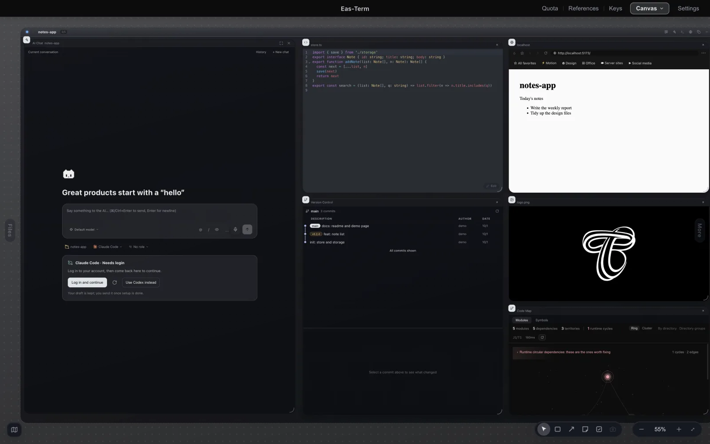
1234567891011- Quota
- References
- Keys
- View switcher
- Settings
- Frame title bar
- Left drawer: Files
- Right drawer: More
- Canvas toolbar
- Zoom
- Minimap
Top bar
- Quota: keeps Claude, Codex and omp quota bars pinned to the top right of the canvas. Hover over one to see when it resets.
- References: a handbook of frontend and backend terms. See References.
- Keys: opens the Key Vault. See Key Vault.
- View switcher: switches between the four views (or use ⌘1–⌘4).
- Settings: also opens with ⌘,. See Settings.
- When tasks are queued or a tool call has been blocked, a reminder appears in the top bar; click it to jump to the relevant setting. When a new version is available, an update badge appears too.
Four views
| View | Best for | Shortcut |
|---|---|---|
| Split | A classic editor layout: projects and files on the left, tabs on the right that you can split side by side or top to bottom | ⌘1 |
| Canvas | An infinite canvas with one area (a Frame) per project. Terminals, AI chats, web pages, code and images all sit on it | ⌘2 |
| Board | One card per project, organized into "To do / In progress / Done" | ⌘3 |
| Gantt | Looking back at how long each AI turn took and which projects are moving | ⌘4 |
Two drawers (canvas view)
- Left: "Files" (⌘B): projects, the file tree, components you can drag onto the canvas, and "done / awaiting approval" reminders.
- Right: "More" (⇧⌘B): four pages, Usage, Skills, Plugins and Wiki.
The bottom right of the canvas holds the toolbar (select, rectangle, arrow, note, to-do, snapshot) and zoom controls. The minimap is in the bottom left.
Canvas and Frames
The canvas is where most of the work happens. Each project gets its own area with a title bar, called a Frame. The terminals, AI chats, web pages and files you open for a project live inside its Frame.
Create a project Frame
Double-click an empty spot on the canvas to open the project menu. You can search, and sort by recently used or by date added; projects that are currently running are listed first. Pick one to create its Frame, or choose "Add Project Folder…" to add a new project.
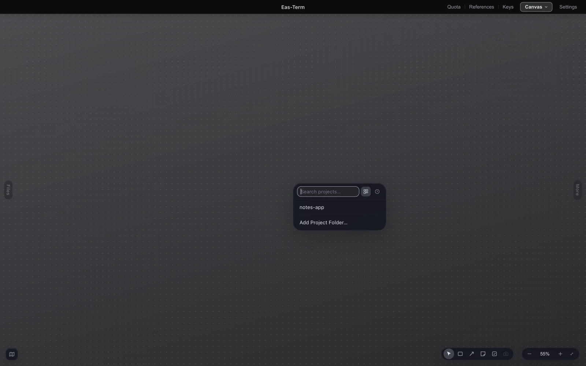
Empty Frame: pick an AI to start
A new Frame shows three buttons in the middle, Claude Code, Codex and omp, with "Open a terminal first" below them. If a CLI isn't installed, its button turns into "Install".
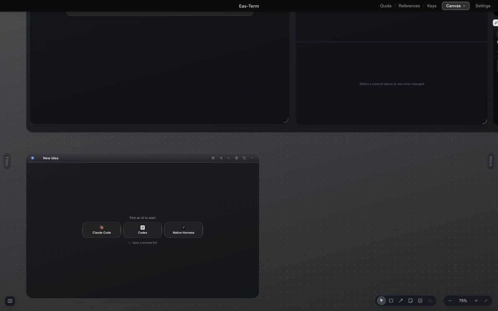
Add things to a Frame
Double-click inside a Frame to open the insert panel. Browse files by category (All, Chat, Docs, Media, 3D, Plugins…) and switch between "Folders" and "Recent". It remembers what you picked last time.
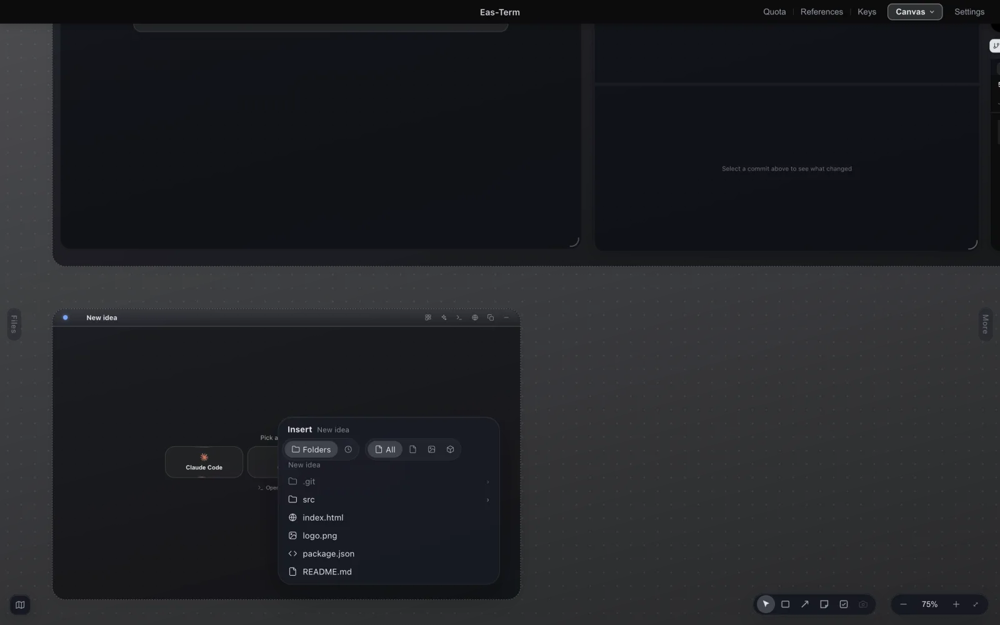
Frame context menu
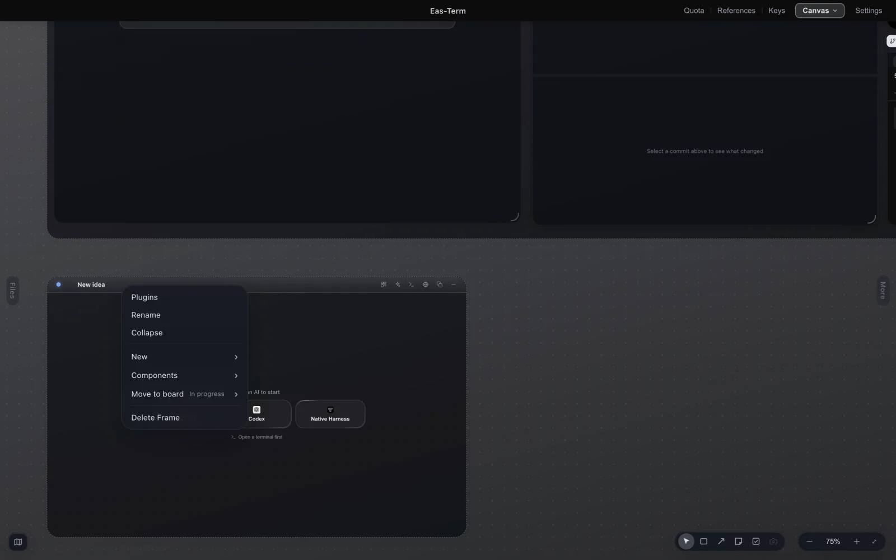
- New: AI Chat, Terminal, Browser.
- Components: Version Control, Design Module, Team Panel, Code Map, Plugin Panel (these need the Frame to be linked to a project).
- Plugins: opens the panel of any enabled plugin.
- There's also Rename, Collapse / Expand, Move to board and Delete Frame.
Canvas tools and shortcuts
- V select, R rectangle, A arrow, N note, T to-do list. Hold Space and drag to pan.
- ⇧⌘O tidies up into a grid, with terminals in the top left. ⌘= / ⌘- zoom, ⌘0 goes back to 100%, ⇧⌘0 fits everything. F focuses the selection, ⌘D duplicates, Delete deletes.
- Right-click an empty spot to add a note or a to-do list.
Maximize
Every module has a maximize button in its top right corner, so it can fill the window while you focus. Press Esc to restore it. A maximized module always shows at 100%, regardless of the canvas zoom.
Snapshot: send your markup to the AI
The camera at the far right of the toolbar takes a snapshot. Drag over an area and it captures it together with the rectangles, arrows and notes you've drawn, ready to attach to an AI chat. Whether your markup is cleared afterwards is up to you, under "Settings › Board".
AI Chat
The AI Chat module is where you talk to Claude Code, Codex or omp. Compared with running the CLI directly in a terminal, it adds approval cards, clickable options, images, a message queue and a checklist.
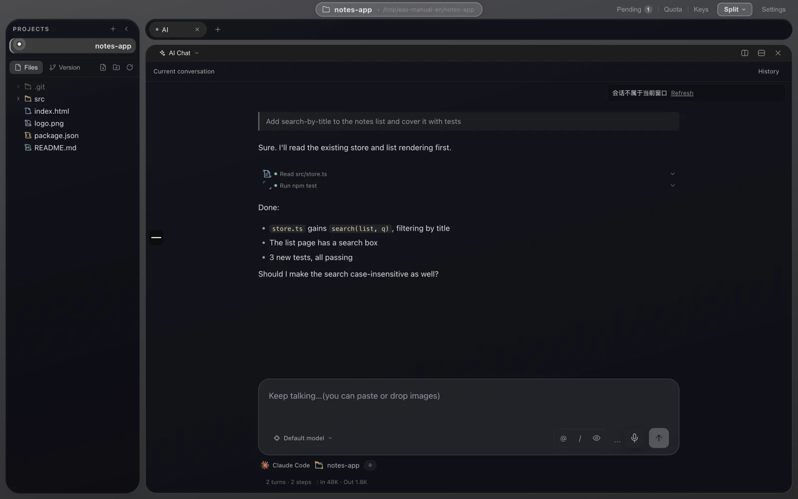
Start a chat
Press ⌘J, right-click a Frame and choose "New › AI Chat", or use the three buttons in an empty Frame. Before you start, you can choose:
- Model and reasoning effort: click the model button at the bottom left of the input box, and set the effort with the slider.
- Codex sandbox: read-only, can edit the workspace, or full access.
- Role: under the input box, click "No role" to pick a role card. A role defines what the AI is responsible for and where its limits are (for example, no editing files or no running commands), and can have it work on a "Separate branch".
The input box
- ⌘Enter sends, Enter adds a new line.
- Type @ to reference files, folders, skills, plugins, browser tabs, References terms and more. Each pick becomes a small chip.
- Type / to run commands and skills.
- Paste or drop images straight in, or attach the canvas snapshot you just took. The microphone on the right is voice input.
- Before sending, click the eye icon in the input box to preview exactly which text, images and references will go out.
- When the AI's reply includes a suggestion, press Tab to put it in the input box (it fills in without sending). With the input box empty, press ↑ to bring back what you sent earlier in this session.
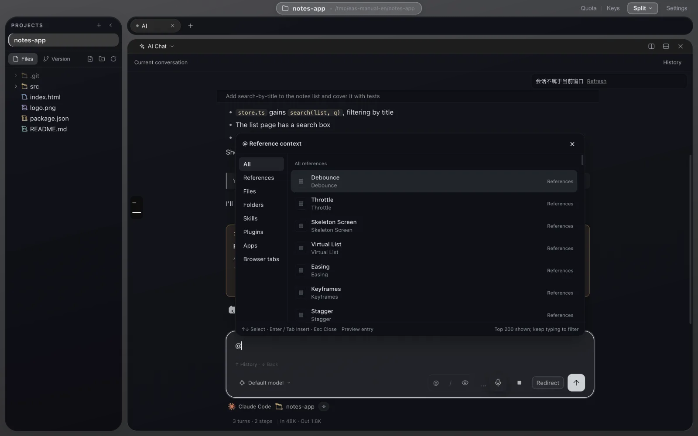
Approvals
When the AI wants to run a command, edit a file or call a tool, an approval card appears showing what it wants to do and in which folder. Click "Allow" or "Deny".
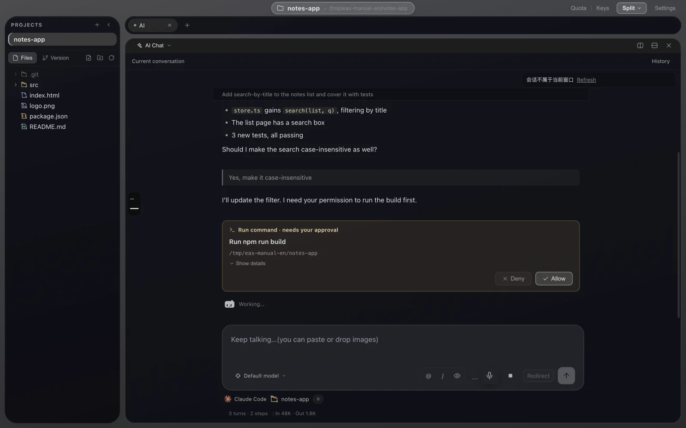
To be interrupted less, go to "Settings › AI Chat": there's the "Ask first" switch, plus three approval levels for omp (Run directly / Approve all / Commands only).
While the AI is busy
- Messages you send go into a queue. You can cancel or reorder them, and they're sent automatically when the current turn ends.
- Redirect stops the current turn and sends your new message first. Use it to course-correct.
- The stop button next to the input box stops the turn outright.
What you'll see in the chat
- Question navigation on the right lets you jump to any question you asked in a long chat. When you scroll away from the bottom, a "Latest" button takes you back.
- Tool call logs are collapsed by default; click to see the details.
- When the AI offers several options, they become cards you can click.
- Images returned by the CLI are shown inline, can be enlarged and are saved locally.
- Checklist: for multi-step tasks, a checklist appears at the top of the chat and each step is ticked off as the AI finishes it. Expand it to see the details.
- Background tasks: commands the AI leaves running in the background (a dev server, for example) show "Running in background", with their own sound and a matching status on the Island.
History and compacting
- "History" in the top right lists earlier chats for this module, this project or your pinned ones. You can search, preview and pick up where you left off.
- When a chat gets long, you can Compact it manually (after confirming). The AI condenses the earlier conversation into a summary and carries on, which saves quota.
Coordination board
When several AIs are working on different branches of the same project, they write their progress to the project's .eas/board.md (the coordination board). If another branch is editing the same file, the branch badge above the chat tells you to take a look first.
Terminal
A standard terminal. Press ⌘T or right-click a Frame and choose "New › Terminal". The input box below it accepts pasted images and voice input. Hold ⌘ and click a path in the output to open the file. Right-click to add a to-do list that belongs to that terminal.
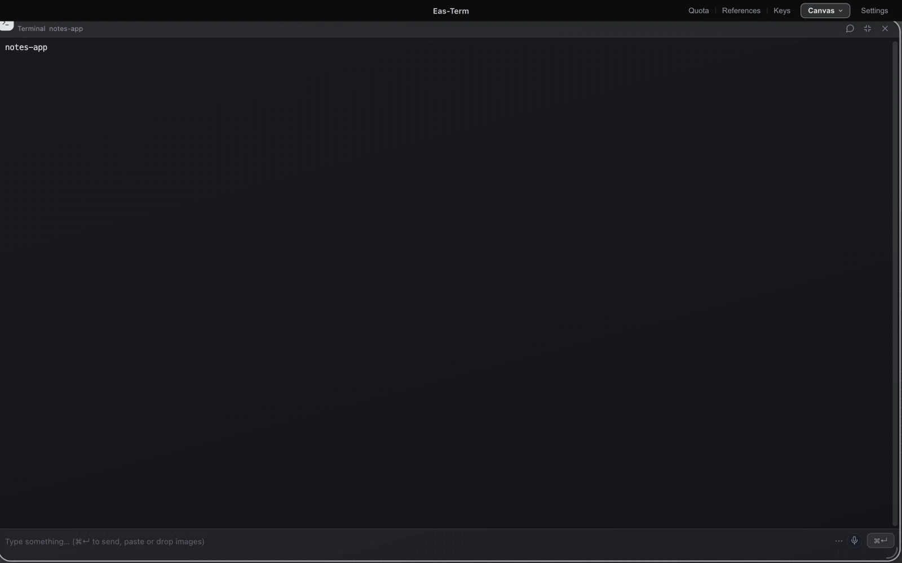
claude or codex directly in the terminal too. The AI Chat module just adds approval cards, options, images and checklists on top.Split view
Press ⌘1 for split view. The left sidebar has two pages, "Projects" and "Files / Version", and can collapse to a thin strip. The right side holds tabs: ⌘D splits right, ⇧⌘D splits down, and ⇧⌘] / ⇧⌘[ switch tabs.
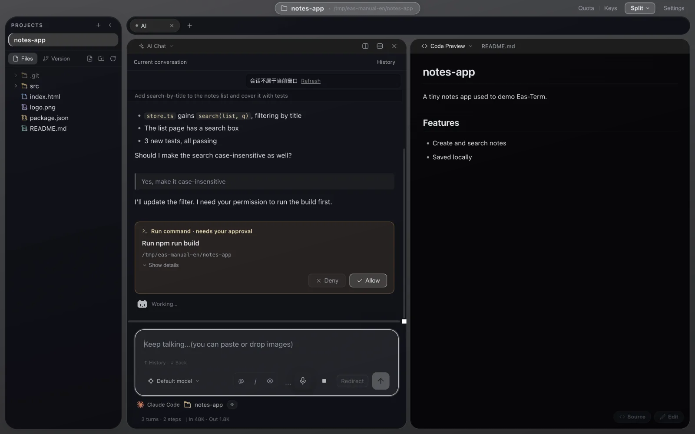
The dropdown in the top left of each pane switches it to another type: Terminal, AI Chat, file preview, History, Wiki, Code Map, References and more.
Files and previews
Files you open from the file tree, the insert panel or an AI reply show up on the canvas as preview modules:
- Code: syntax highlighted; click "Edit" in the bottom right to change it in place. Markdown is rendered, with a copy button on code blocks. Diffs show what changed.
- HTML: choose "Preview as Code" or "Preview as Web Page".
- Images: double-click to zoom, drag to pan, and use the grid to browse other images in the same folder.
- Video: pauses automatically when you click elsewhere, and can go full screen. Audio plays directly.
- 3D: only .glb files can be previewed for now (the viewer, about 1 MB, downloads the first time).
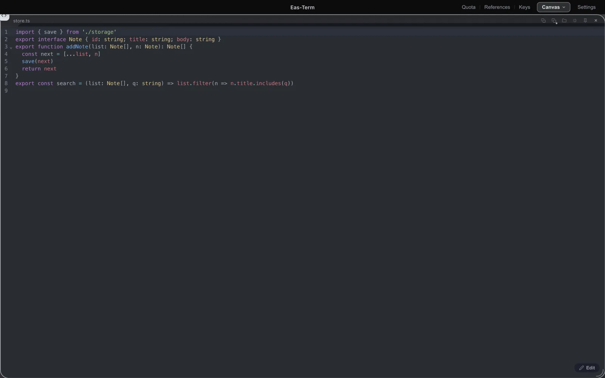
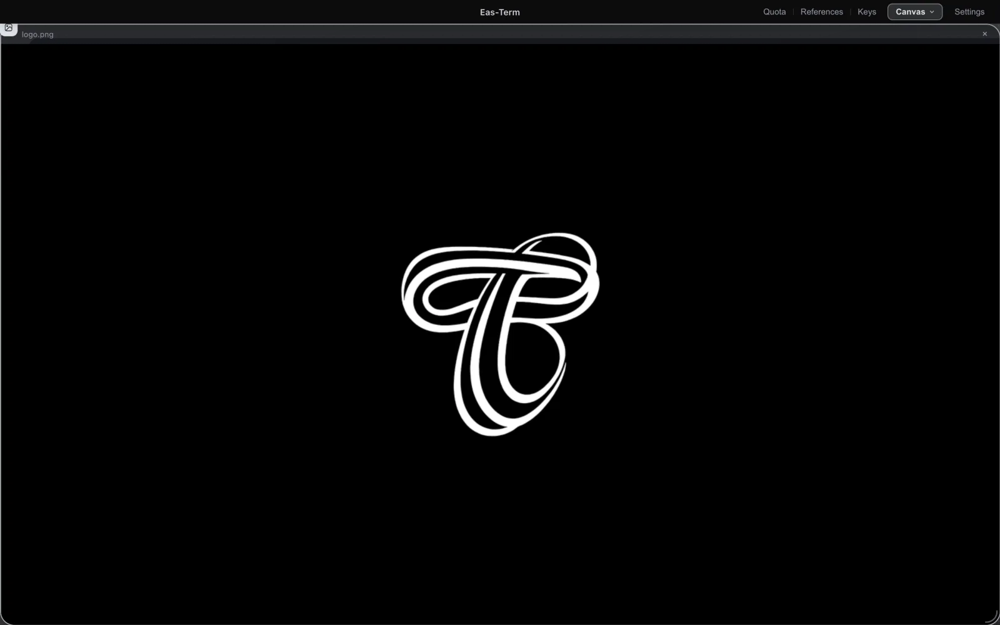
Browser
Right-click a Frame and choose "New › Browser". It keeps you signed in to sites, and third-party sign-ins such as Google happen in a separate small window.
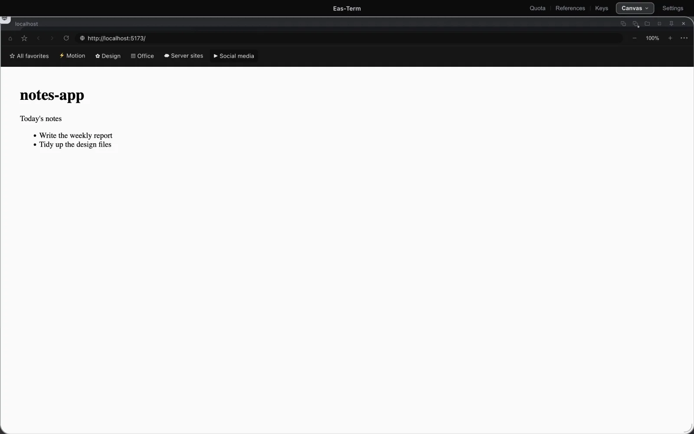
- Favorites bar: five fixed groups (motion, design, office, server sites and social media platforms), plus your own folders and stickers.
- Page zoom: when the browser is maximized, "− zoom +" to the right of the address bar scales only the web page, not the canvas.
- Page Viewer: when the AI is building a web page for you, put your local dev address (localhost) in the Page Viewer and watch changes as they happen. Reports the AI submits can sit above or below the page you're debugging.
Version Control (Git)
Open the "Version" page in the split view sidebar, or the "Version Control" component on the canvas.
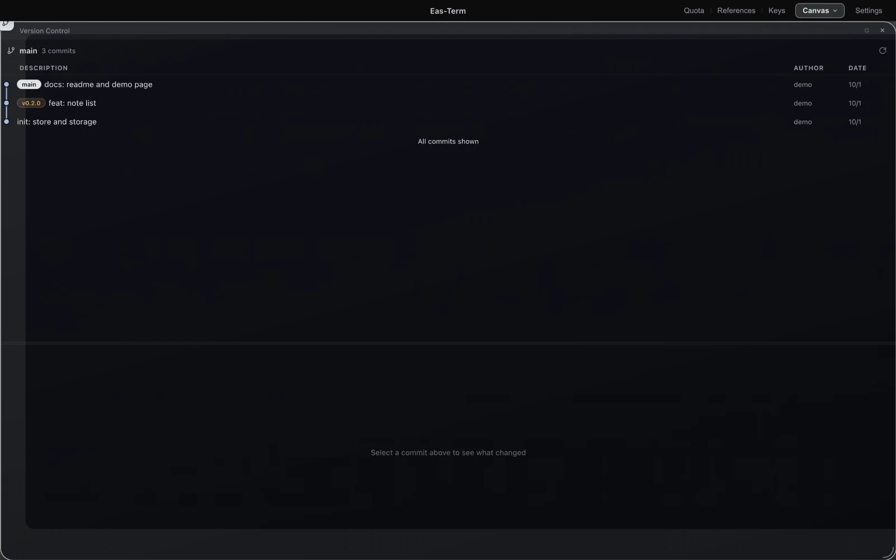
- Stage, commit and discard changes. "AI summary" writes the description of your changes for you.
- A branch graph and commit history; scroll down to load older commits. Tagged commits are marked.
- Right-click a commit to check it out, create a branch from it, compare, add a tag, copy its hash or message, or reset to that version.
Code Map
Right-click a Frame and choose "Components › Code Map". It draws your project as a graph so you can see which modules depend on which.
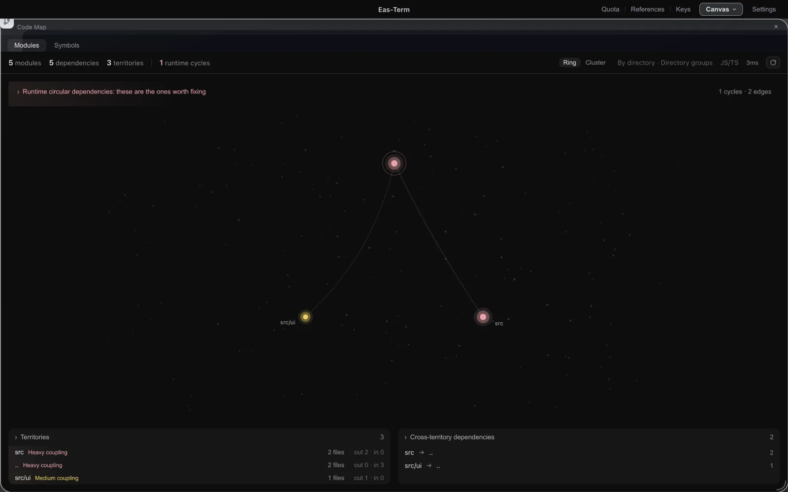
- Modules view: dependencies between files and folders, in a Ring or Cluster layout. Runtime circular dependencies are highlighted separately; those are the ones most worth fixing.
- Symbols view: which functions call which, and code nobody uses.
- Supports JS/TS, Python (you need to install pyright yourself), C/C++ and Swift. Click a file name to open its code in the same Frame.
References
Open it with "References" in the top bar. It's a handbook of terms for people who build products: when you know the effect you want but not what it's called or how to ask the AI for it, look here.
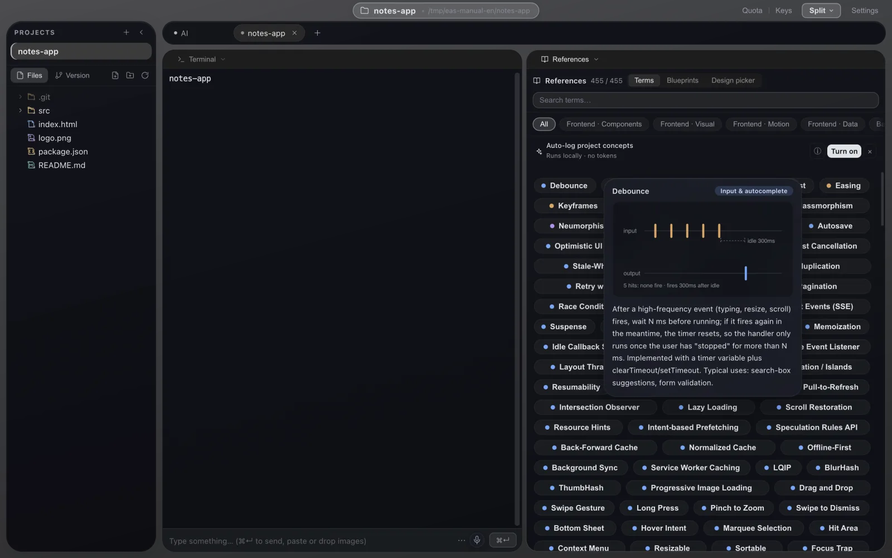
- Terms: hundreds of frontend and backend techniques (debounce, skeleton screens, frosted glass, parallax…), grouped by scenario and searchable. Hover over one to see an animated example and an explanation.
- Click a term to attach it to the AI input box as a small chip. When you send, it expands into a complete, ready-to-run prompt.
- Blueprints: the sections that common pages (home page, detail page, settings page…) are made of. Click a section to jump to the matching terms.
- Design picker: filter and preview hundreds of design systems by interface type, then attach one's color palette or full spec to your chat.
Side drawers
Each side of the canvas has a drawer.
Left: Files (⌘B)
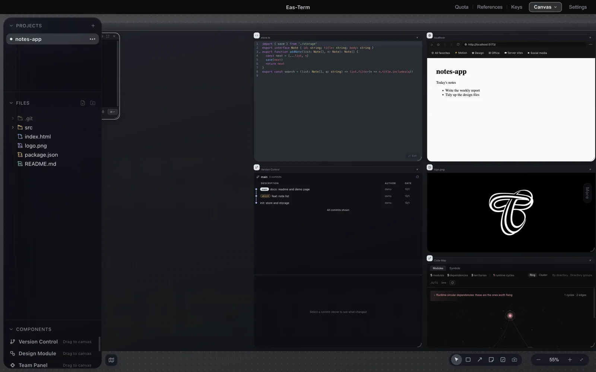
The project list, the current project's file tree, and components you can drag onto the canvas. When an AI finishes a task or is waiting for your approval, a reminder bubble appears here too.
Right: More (⇧⌘B)
Four pages: Usage, Skills, Plugins and Wiki, each covered in the sections below.
Wiki
"More › Wiki". Your wiki is simply a folder of markdown files you choose, where both you and the AI keep notes.
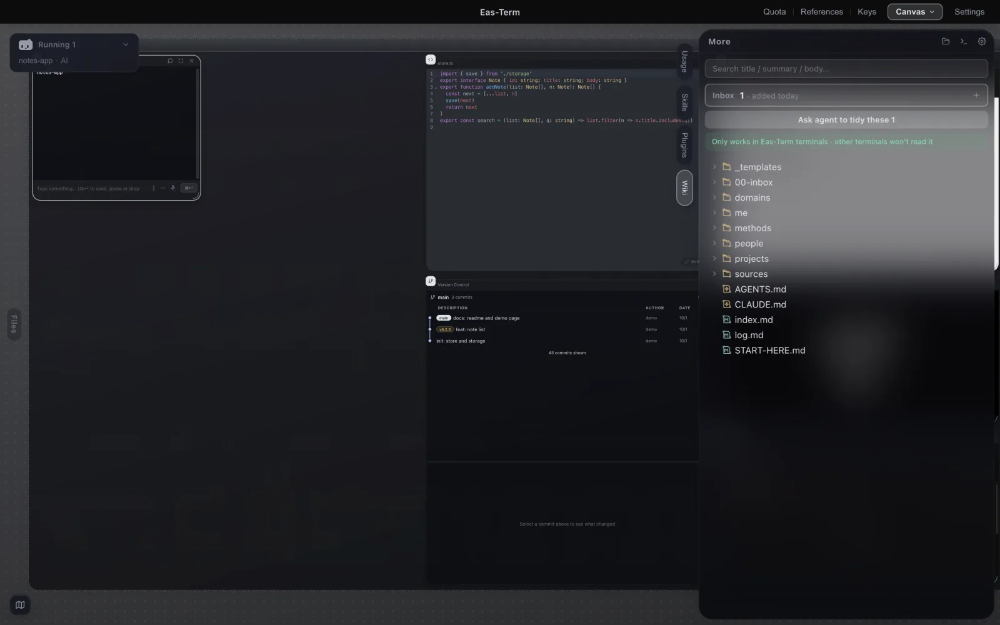
- The first time, pick a folder to use as your wiki.
- New material lands in the Inbox first. Ask the AI for an Archive plan; it only acts after you've checked and confirmed each item. If the wiki is a git repository, a snapshot is taken first, so you can roll back an archive you don't like.
- Three tabs: Files, Graph (how notes link to each other) and Health (broken links, orphan pages, missing summaries and so on). Backlinks are supported.
- Audio and video can be transcribed to text locally and saved in.
Plugins and the Plugin Market
"More › Plugins". Plugins give you and the AI ready-made abilities, such as reading and writing Word, Excel and PowerPoint files, checking the weather, querying Amap, or connecting to Notion and GitHub.
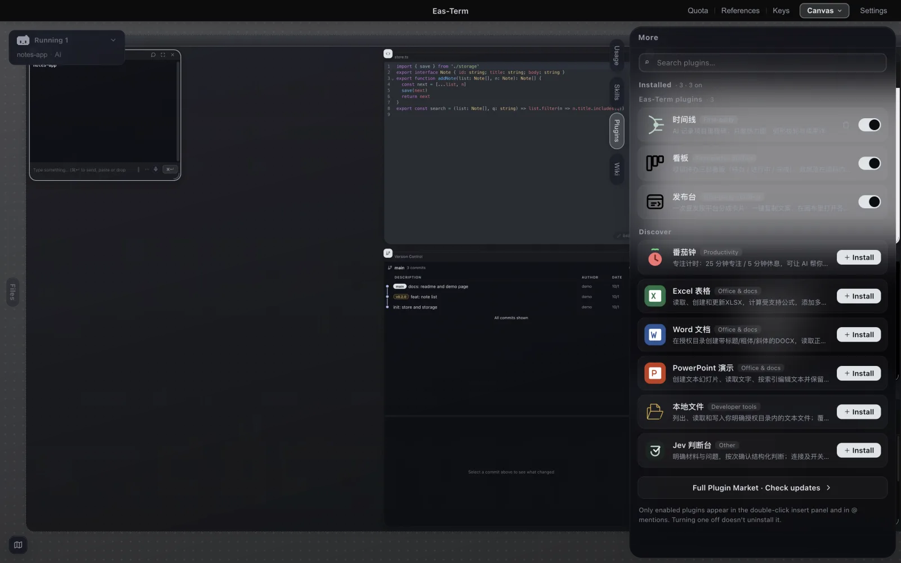
- Installed plugins have an on/off switch. Only plugins that are switched on appear in the double-click insert panel and in @ references, and only those can be used by the AI.
- Click "Install" for one you don't have yet. "Full Plugin Market" lets you browse by category, search and check for updates, and add other plugin sources (they must be public HTTPS addresses).
- Bundled with the app: Board (a three-column to-do board per project), Publish Desk (write content per platform and check for banned words), Timeline (project milestones recorded by the AI, plus weekly report receipts) and Jev (requires setting up an external service yourself).
- The switches for the system plugins "Checklist" and "Computer View" are in "Settings › MCP Access › Built-in plugins". Computer View can take screenshots for the AI to look at, with sensitive windows blurred. To let it click or type, you must grant time-limited permission separately in its panel, and give Eas-Term the macOS "Accessibility" permission.
- Plugins that need a key keep it in the Key Vault, so it never shows up in a chat.
Skills
"More › Skills". Lists the skills each CLI on your machine can use, grouped by CLI / project / global, with search.
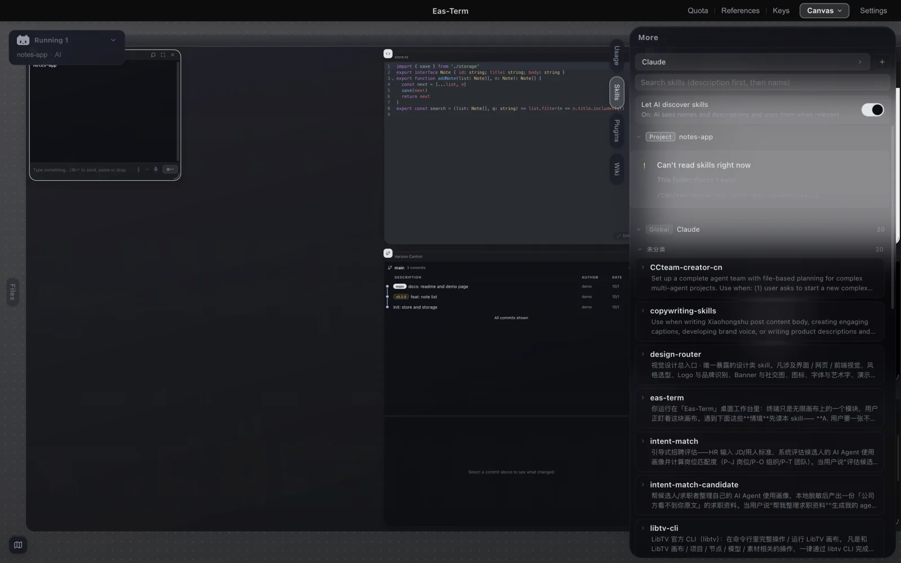
- Add your own folders and drag skills into categories.
- Disable any skill individually (this only applies inside Eas-Term and doesn't touch your files).
- The "AI discovery" switch: turn it off and the AI won't pick skills on its own; a skill is only used when you call it with a / command or by name. Handy when you have lots of skills and the AI keeps reaching for the wrong ones.
Usage and quota
"More › Usage" shows how much you've used:
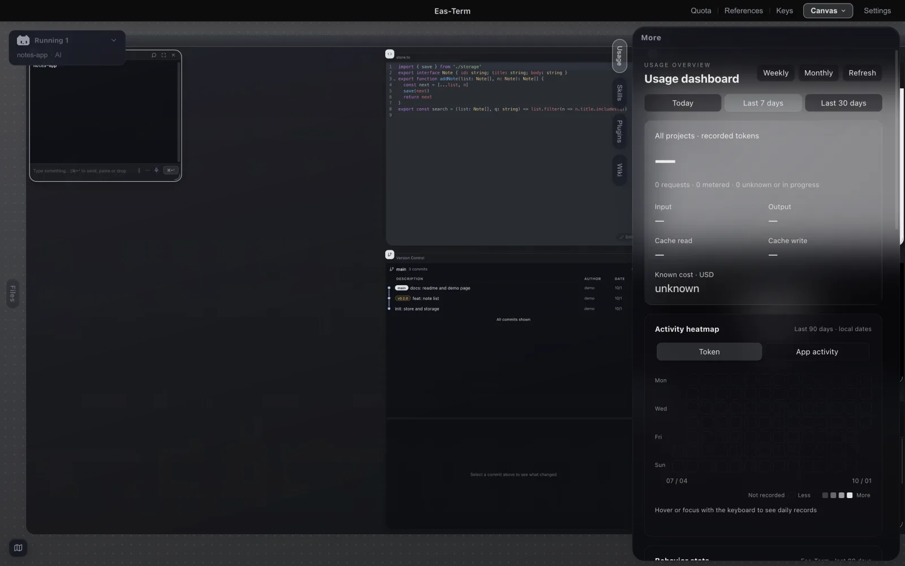
- Token usage by project, session and individual request, for today, the last 7 days or the last 30 days.
- A 90-day heatmap that switches between "Token" and "App activity".
- Weekly and monthly report receipts you can copy or save as an image.
The "Quota" switch in the top bar keeps quota bars for all three CLIs in the top right of the canvas; hover over them to see when they reset. Claude's percentages require turning on quota reading in "Settings › AI Chat".
Board
Press ⌘3 for the board. Each project gets one card showing how many terminals and AI chats it has, and which are running or waiting for you.
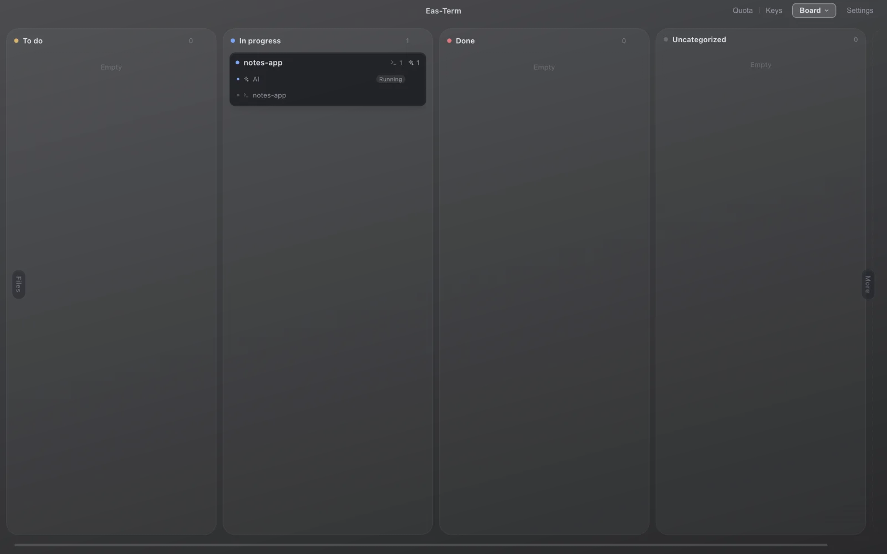
- Drag cards to change their status; dragging to the edge scrolls automatically.
- Columns can be added, renamed and deleted (delete a column and its projects go back to "Uncategorized").
- On the canvas, right-click a Frame and choose "Move to board" to change its status too.
Gantt
Press ⌘4 for the Gantt view, which shows how long each AI turn took, from the moment you sent a message to when the AI finished.
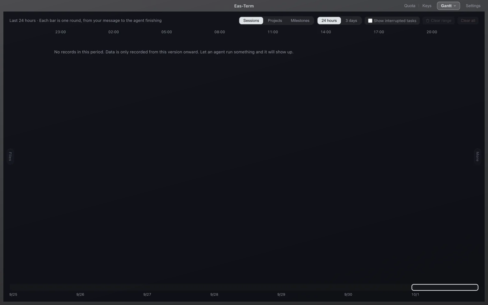
- Three ways to look at it: Sessions, Projects and Milestones (one diamond per commit, a bigger one for tagged commits).
- Switch between "24 hours" and "3 days", hold ⌃ and scroll to zoom, and use the week strip at the bottom to jump to a date.
- Right-click a bar to jump to that terminal in the split view, canvas or board. You can also delete a single bar or clear them all.
- Only data from after you installed this version is recorded, so it starts out empty.
Teams and multi-agent
Have several AIs split up the work and run at the same time. This is off by default: turn on the multi-agent switch in the Frame title bar before the AI can form a team, and you'll still be asked to confirm before it does.
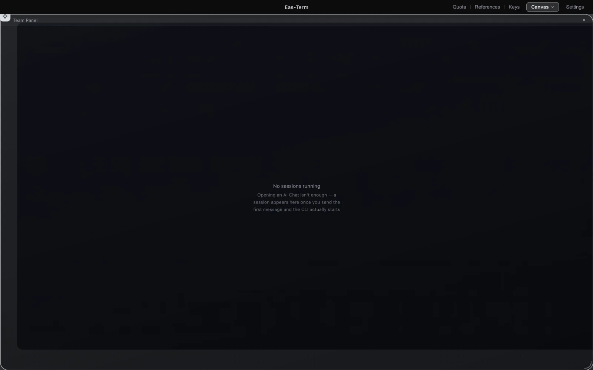
- Right-click a Frame and choose "Components › Team Panel" to see the status and usage of every AI session in the project. Stop them one at a time or all at once.
- A session only appears in the panel after it has sent its first message and its CLI is running.
- Each AI can work on its own separate branch, and they record their progress on the coordination board.
Key Vault
"Keys" in the top bar. API keys, tokens and other secrets belong here. Don't paste them into a chat.
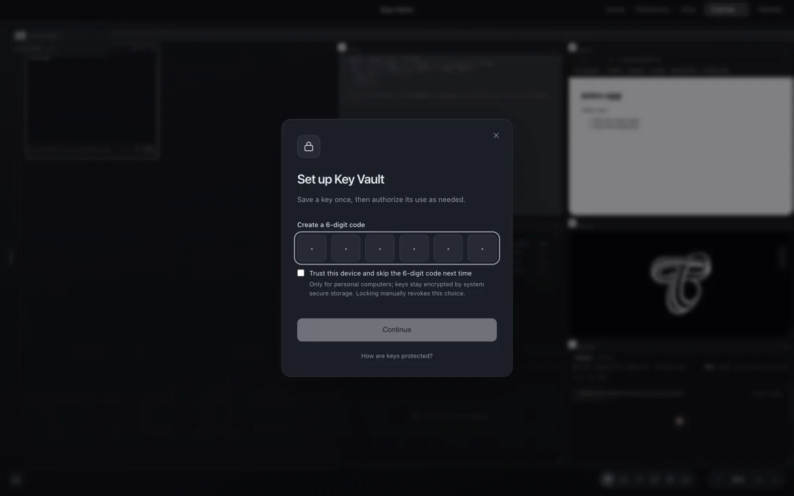
- The first time, set a 6-digit code. You can check "Trust this device" to unlock automatically from then on.
- When an AI or plugin needs a key, a dialog shows which project, which module and which key it's asking for. It only gets the key after you approve.
- Keys are injected only into the running program and never appear in the chat.
Island
A small pill at the top of your screen that tells you what's happening in Eas-Term while you're in another app: how many projects are running, which AI has finished, and which is waiting for your approval.
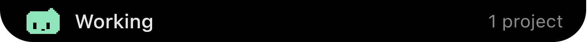
- It steps aside when Eas-Term is in the foreground, so it never gets in your way.
- Right-click to shrink it to a small dot. If you don't want it, turn it off in "Settings › Appearance"; to bring it back, right-click the Dock icon and choose "Show Island".
Voice input
The input boxes for AI Chat and the terminal both have a microphone on the right. Speech is recognized offline on your computer and no audio is uploaded. The recognition model downloads the first time you use it.
- Three modes: Standard (filters out everything except voices), Strong (for noisy places, may miss quiet speech) and Basic (uses only your device's own noise reduction).
- When you finish speaking, release or click again. The recognized text goes into the input box and is not sent automatically.
Phone
"Settings › Phone". Follow the projects and AI progress on this computer from your phone.
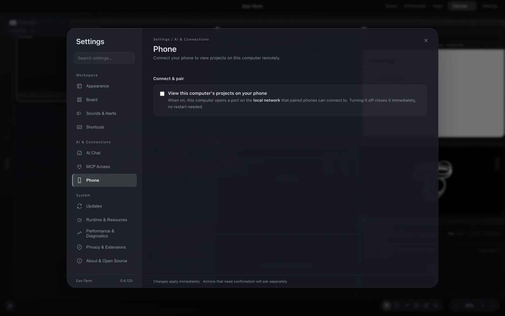
- Turn on the switch and your computer opens a port on the local network and shows a QR code. Scan it with your phone, then click "Allow" on the computer to finish pairing.
- For now, your phone and computer need to be on the same Wi-Fi.
- You can remove paired devices at any time, and actions taken from the phone are logged. Turn the switch off when you're done and the port closes immediately.
Settings
Open with ⌘,. The left side has three groups, with a search box at the top.
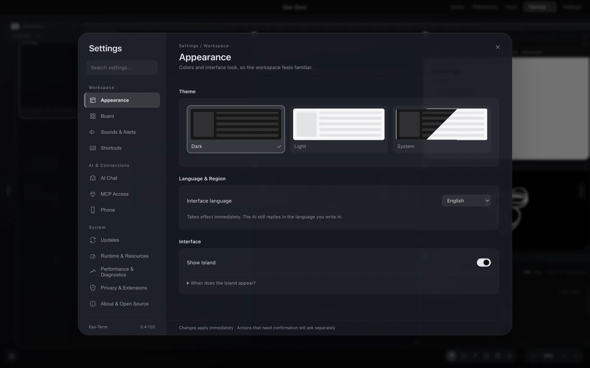
Workspace
- Appearance: theme (Dark / Light / System), Interface language (Chinese / English / Follow System; changes apply immediately and the AI replies in the matching language), and the Island switch.
- Board: whether to clear your markup after a snapshot.
- Sounds & Alerts: three sounds, for done, awaiting approval and running in background.
- Shortcuts: change any shortcut, or restore the defaults.
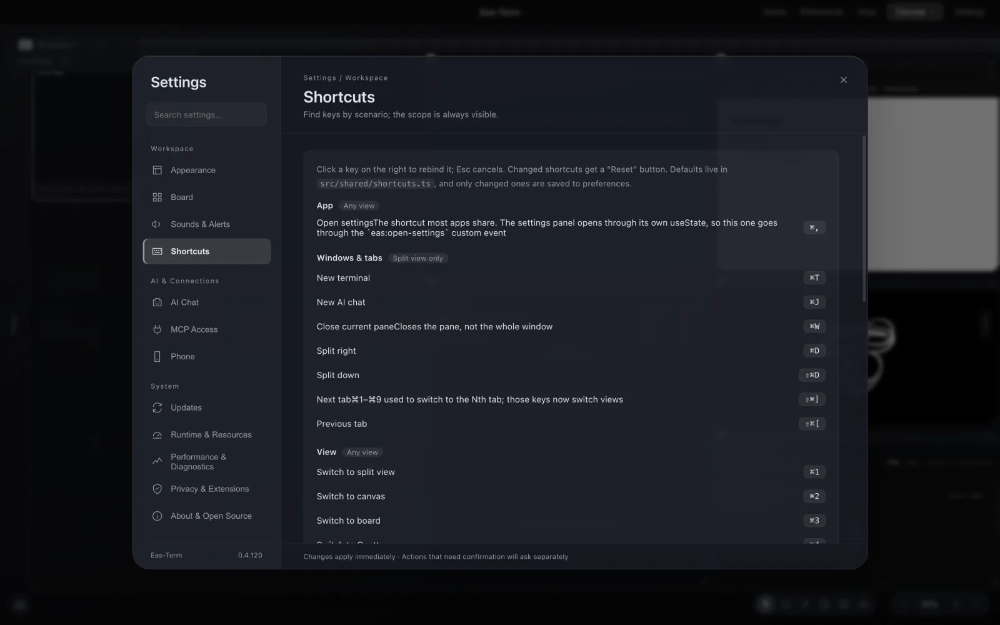
AI & Connections
- AI Chat: sign in to Claude Code and Codex, "Ask first", the three omp approval levels, and quota reading.
- MCP Access: a log of the Eas-Term tools the AI has called, plus switches for the core connections (Workbench, Bizone Canvas, Usage guide) and the built-in plugins.
- Phone: see the previous section.
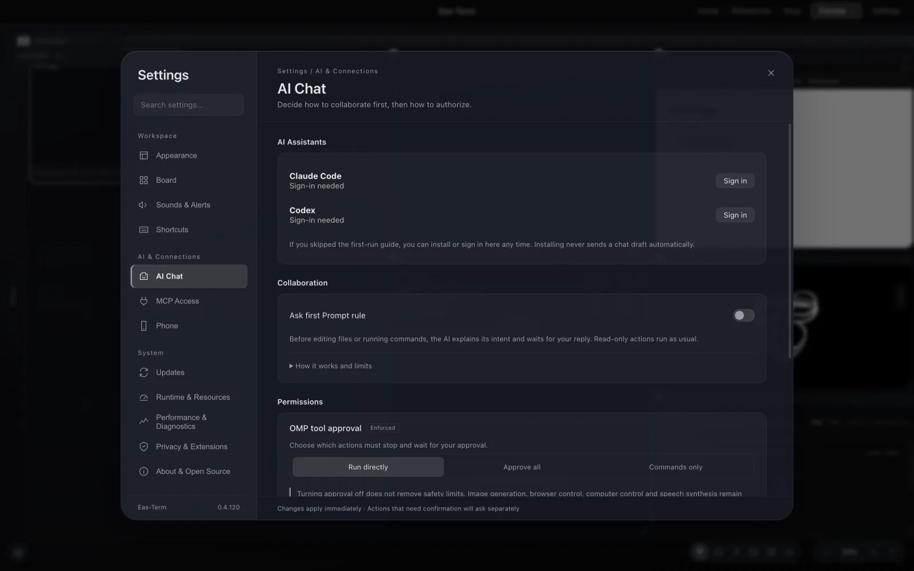
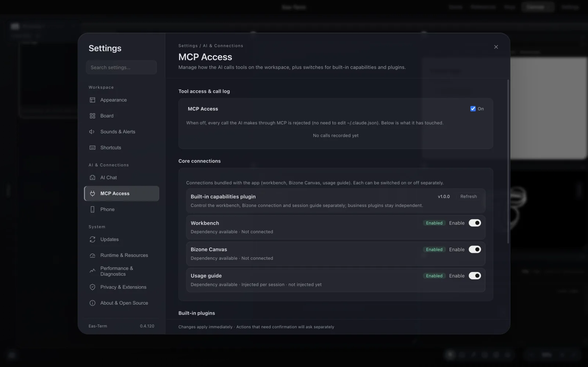
System
- Updates: checks for new versions of Eas-Term (it only downloads and opens the installer, never installs on its own). Automatic updates for Claude Code and Codex are off by default; you can turn them on, and roll back too.
- Runtime & Resources and Performance & Diagnostics: how many tasks run at once, graphics status, and troubleshooting logs.
- Privacy & Extensions: anonymous usage statistics (on by default, can be turned off), and a list of everything Eas-Term has written to your computer, each of which can be removed. See Privacy & Data.
- About & Open Source.
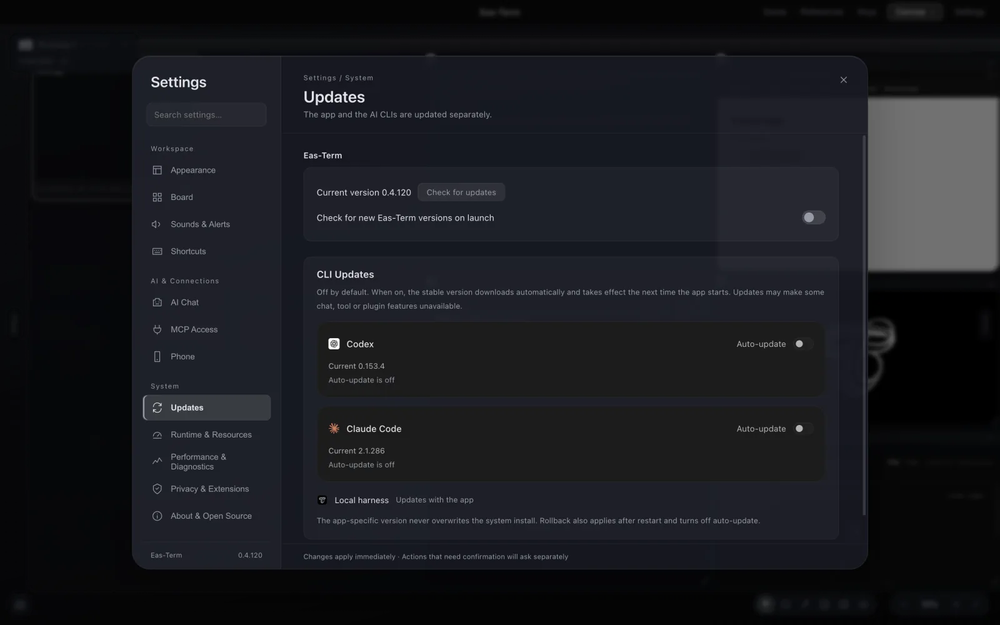
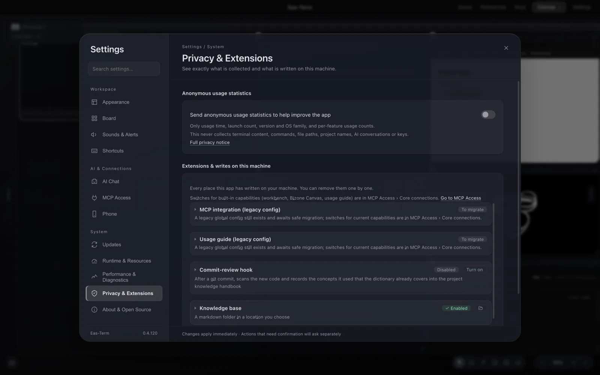
Keyboard shortcuts
The most common shortcuts are listed below (on Windows, replace ⌘ with Ctrl). You can change all of them in "Settings › Shortcuts".
| Action | macOS | Where |
|---|---|---|
| Open settings | ⌘, | |
| New terminal | ⌘T | |
| New AI chat | ⌘J | |
| Close current pane | ⌘W | Split view |
| Split right / Split down | ⌘D / ⇧⌘D | Split view |
| Next tab / Previous tab | ⇧⌘] / ⇧⌘[ | Split view |
| Switch to Split / Canvas / Board / Gantt | ⌘1 / ⌘2 / ⌘3 / ⌘4 | |
| Left drawer / Right drawer | ⌘B / ⇧⌘B | Canvas |
| Tidy up | ⇧⌘O | Canvas |
| Zoom in / Zoom out / 100% / Fit all | ⌘= / ⌘- / ⌘0 / ⇧⌘0 | Canvas |
| Select / Rectangle / Arrow / Note / To-do | V / R / A / N / T | Canvas |
| Focus selection | F | Canvas |
| Pan | Hold Space and drag | Canvas |
| Send message | ⌘Enter | AI Chat |
| Exit maximize / Close popup | Esc |
FAQ
AI Chat says "Needs login"
The CLI it uses isn't signed in yet. Click "Log in and continue" to open a terminal and sign in with your own account, or click "Switch to Codex" (or another option) to use a different one.
I clicked Claude Code or Codex and the button turned into "Install"
That CLI isn't installed on this computer yet. Click "Install" to open a terminal that runs the install command. If your network is restricted, you can use omp, which ships with the app, instead.
Files or web pages I opened close on their own after a while
You can have at most 5 content modules open at once; opening more closes the oldest. Click the pin in a module's top right corner to keep it.
The AI keeps stopping to wait for my approval
Turn off "Ask first" in "Settings › AI Chat", or set omp's approval level to "Run directly" or "Commands only".
How do I switch between Chinese and English?
"Settings › Appearance › Interface language". It follows your system by default; if you upgraded from an older version, it stays in Chinese.
Is my data uploaded?
Your project files and chat content are never uploaded to Eas-Term. Anonymous usage statistics only include usage time and feature counts, and you can turn them off in Settings. See Privacy & Data for the full details.
Still have questions?
Check the changelog to see what's changed recently.